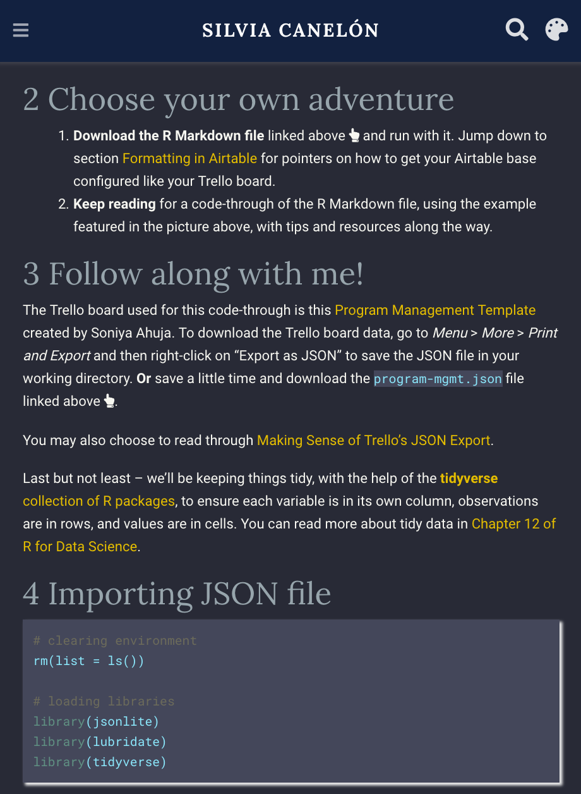
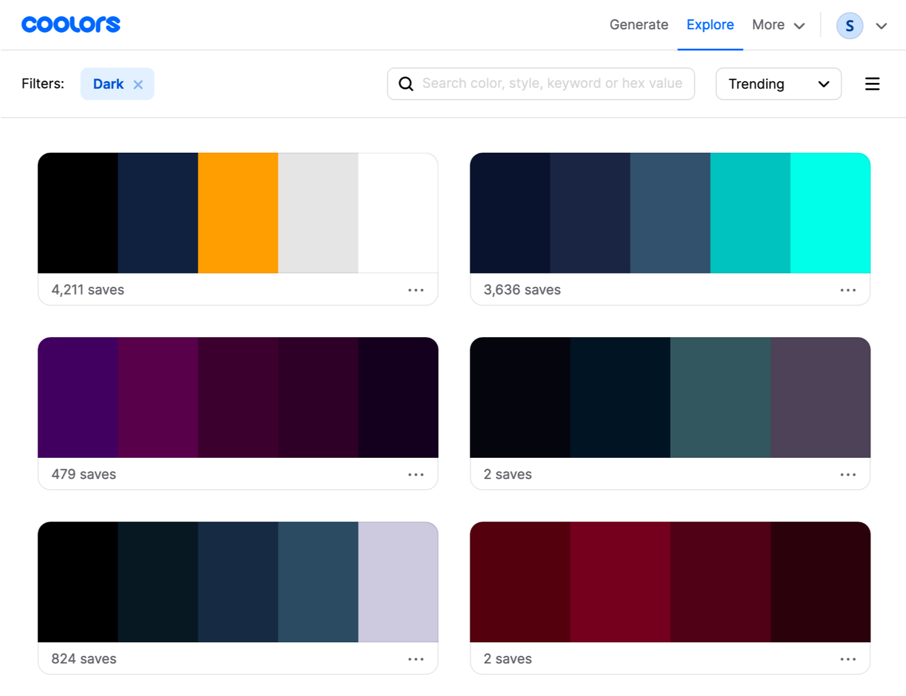
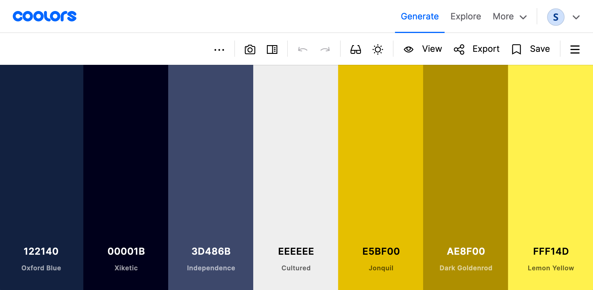

Customizing Hugo Academic's Dark Mode with Help from Atom
Tutorial on how to customize the dark mode in Hugo’s Academic theme with help from the Atom text editor package Pigments.
{kind=link}
1 Where I started
With Alison Hill’s Up and Running with Blogdown post! Super helpful, though because I came to it 2.5 years late, it was more like ‘up and running with lots of water breaks’ because I had to stop and account for changes made to the Hugo Academic theme in the meantime.
- For example, prior to Academic version 4.6, custom CSS was added using the
plugins_cssoption inparams.toml, but in current version 4.8, the theme supports SCSS (a superset of CSS) and acustom.scssfile is added in theassets/scss/folder.
The going futher section in Alison’s post specifically talks about customizing the out-of-the-box theme and Alison directly links to her custom CSS file, which I closely referred to when changing colors in my custom SCSS file.
Alison’s CSS helped me customize everything from text colors and fonts to alert colors and borders for Academic’s light mode. At this point I had the light mode looking the way I wanted but the dark mode still used out-of-the-box colors for the most part and they just didn’t go.

So I decided not to enable the dark-mode option in params.toml until I could figure out how to customize my stylesheet accordingly. That time has come because it turns out it’s pretty straightforward!
The Blogdown book does an excellent job summarizing what you need to know about CSS. This post builds on that a little by incorporating features made possible by SCSS including variables.
2 Choose your own adventure
- Check out the SCSS file linked above to see how I customized my theme.
- Keep reading to follow along and learn with me .
3 Why Atom?
Atom is a text editor that I like to use to modify any files in my website directory. I say modify because I much prefer to create content for posts like this one using the Blogdown addins in RStudio. It’s such a breeze! But here’s why I think Atom is a fantastic companion to the RStudio IDE:
- Seeing your directory files is made friendly in Tree View when you open your website folder as a ‘project folder’. You can just click on the file once to preview it and double-click if you want to actually open it. I find this to be really helpful when I can’t remember which file contains what I’m looking for because I don’t have to actually open each file to see what’s in it.
- Searching for something specific is easy with the built-in search tool. I’ve used this many times when I can’t remember where that specific parameter (e.g. fonts) or file type (e.g.
.scss) is located within my directory. I also find it super handy to find specific HTML color codes or color variables. This brings me to my most favorite feature in Atom… - The pigments package! Like R, Atom has a universe of handy packages and
pigmentswill display colors behind the code text that represents it. It’s kind of magical and has been a real game changer for me. Having this package will make customizing your scss file much easier on the eyes and brain.
- You may also choose to install the highlight-selected package to make highlighted text easier to spot throughout your file and the file-icons package to make it easier to discern between different file types in your tree view. You can install packages in Atom > Preferences > Install.
4 Adding dark mode definitions to stylesheet
Looking through GitHub issues I found that including two sub-themes, one for light mode and one for dark mode, may be considered for Academic in the future but is not a priority. A related issue shared that if you use a custom CSS, you can define .dark .<SELECTOR-NAME> {...} for dark mode.
dark.scss dark mode stylesheet built in to Academic in themes/hugo-academic/assets/scss/academic/ folder. You can see the pigments package in action here! It makes it easier to identify elements with colors that you want to change. I’m looking at you inline code text color
rgb(139, 233, 253) .

Another way to find the css for the element you want to change is to use your browser’s web inspector tool. In the screenshot below from Hugo Academic’s customization documentation I right-clicked on themes/academic/data/themes/minimal.toml and then clicked on “inspect element”. The element code was .dark pre, .dark code which you might recognize from the code in dark.scss.

You can copy and paste this new .dark theme code a new (or existing) custom.scss file saved in the assets/scss/ folder of your directory to start seeing how changes you make affect the look of your site.
5 Choosing dark theme colors
Alright. Now that we have some new dark theme code in our custom file, we can move on to the exciting task of choosing colors! If you’re looking for some inspiration, Coolors has some dark color palettes:
 Coolors is also a great place to save colors into custom palettes. Here’s a basic example of mine:

If you’re like me and want to design a dark theme that uses the primary and secondary colors you picked for your light theme, keep reading! I’m gonna share highlights from what I learned about dark theme design and how to ensure your color combinations meet Web Content Accessibility Guidelines (WCAG).
The bulk of what I learned came from the extensive Material Design resources, including (of course) the dark theme foundational material, which will look familiar if you’ve ever used an Android device.
5.1 Basics of dark theme design
- The primary surface color for dark themes should be dark gray, rather than black. The recommended color is #121212 .
- As you layer components, surfaces with a higher elevation (closer to the hypothetical ‘light source’) should be lighter than those below it to create a visual hierarchy. This can be achieved by applying a semi-transparent white overlay to the primary dark gray surface.

- The primary text color for dark themes should not be 100% opaque white (i.e. #FFFFFF ) because it can appear to bleed or blur against dark backgrounds and be difficult to read.
- Text hierarchy is established by controlling the opacity, for example:
- High emphasis text is white with 87% opacity
- Medium emphasis is white with 60% opacity
- Disabled text is white with 38% opacity
- To meet WCAG AA standard, there must be a 4.5:1 contrast level between the body text and the dark theme surface at the highest/lightest elevation. The contrast level is 7:1 for the WCAG AAA standard.
5.2 Tools to explore palettes
Material Design has a color palette generator and a color tool that can be used to dark and light variants of a color. I used the color tool to find a dark and light variant of my primary and secondary colors. The accessibility feature of the color tool is helpful to determine the minimum opacity for white text to ensure enough contrast. The Coolors color contrast checker is another great tool.

6 Color variables
One of the cool features of SCSS is the ability to use variables defined by prefix $ (i.e. $spc-primary: #122140;. You can set your variables at the top of your SCSS file and use the variable name throughout the file. This makes it super easy to try out different dark mode colors without having to use find-and-replace. If you’re using the pigments package in Atom, it’ll even show you the variable colors in a dropdown!

Tip: I like using a bright color like redto test color changes for different CSS elements because stands out and makes it easier to see what was modified.
I defined my primary colors and variants, text colors, and various background colors as variables. And although dark gray (#121212) is recommended as a standard dark theme background, you can also create a custom background color by mixing it with your primary color. In my case I used mix(#122140, #121212, 40) to create a color that was 40% my primary color and 60% dark gray.
I controlled white text opacity by using
rgba()in CSS which accepts an alpha value between 0 and 1.
Now, ideally I’d be able to define the result of this mix() as a color variable, but some CSS properties like background-color don’t recognize it. So I had to convert the result to a color code and define that as a variable instead. Pigments made this conversion easy when I toggled the menu (Shift+Command+P on a Mac) and searched for the Pigments: Convert options.

This mix() function also came in handy when defining background surfaces with semi-transparent white overlays.

And that’s a wrap. Have fun building your new custom dark theme!
Silvia P. Canelón
Postdoctoral Research Scientist
Biomedical engineer turned informaticist, curious about all intersections of data and society. Pronouns: she/her.